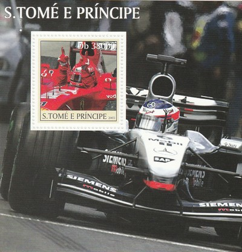
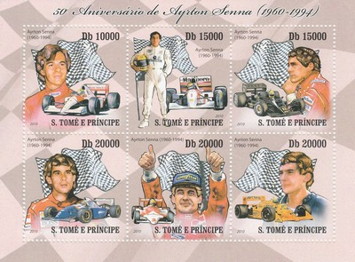
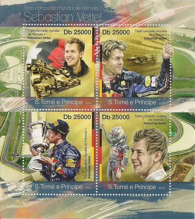
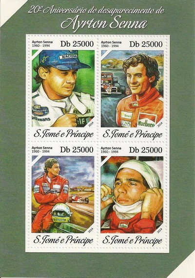
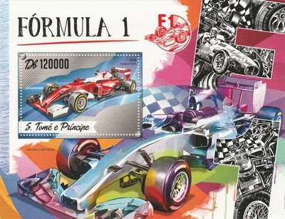
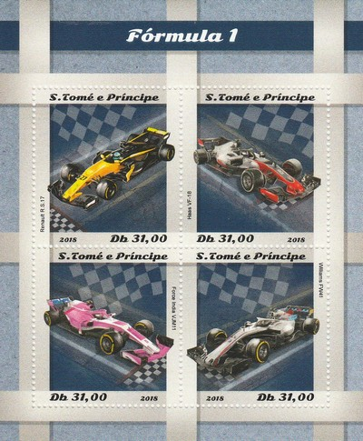
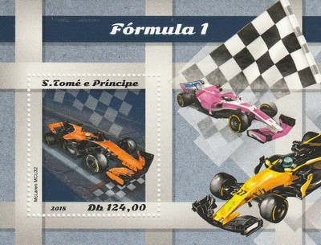

Democratic Republic of Sao Tome and Principe
 |
 Issue date: 2003 The 2003 F1 season commenced on March 9, 2003 and ended on October 12 after sixteen races. Michael Schumacher (Ferrari) beat Kimi Raikkonen (McLaren) by two points to the title and Ferrari won the constructors championship. The 2003 season saw the introduction of new regulations intended to increase F1's excitement and to help alleviate the financial difficulties of the smaller teams. One-lap qualifying was introduced as a way for smaller teams to get more television exposure. Optional Friday testing at Grand Prix events was introduced in exchange for less miles on stand alone test days. This was intended to give smaller teams a cheaper alternative to these test days, which were to be banned in 2004. Only one type of wet weather tyre was allowed to be used in wet weather races. The point scoring systems for both the Constructors and Drivers titles were changed from 10, 6, 4, 3, 2, 1 for the first six finishers at each round to 10, 8, 6, 5, 4, 3, 2, 1 for the first eight finishers in an attempt to make the title contests closer. While Ferrari's Michael Schumacher had won the 2002 championship by 67 points from his team-mate Rubens Barrichello, the 2003 season was much closer. For a great part of the 2003 season, several drivers from several teams had mathematical chances of winning the world championship. Eight different drivers won a Grand Prix, amongst them three first time winners. Kimi Raikkonen, driving for McLaren-Mercedes, and Juan Pablo Montoya, driving for BMW Williams. Both had a chance of claiming the 2003 championship until late in the season, with Raikkonen still mathematically in contention at the final race, the Japanese Grand Prix. Raikkonen lost the championship to Schumacher by two points, although he won only one race to Schumacher's six. Ferrari's defence of the constructor's title was challenged throughout the year by Williams and McLaren, one of the few seasons where there were three front running teams. Notable races include the chaotic Brazilian Grand Prix which was hampered by monsoon conditions, and the British Grand Prix where the track was invaded by the now-defrocked priest Neil Horan, who ran onto the Hangar straight, running towards the 250 km/h train of cars, wearing a green kilt and waving religious banners. After failing to complete the 2002 season due to financial difficulties, the Arrows team had their application for admission to the 2003 championship rejected by the FIA prior to the season start date. No reason was publicly given by the FIA and Arrows subsequently folded after 25 years in Formula One.  Issue date: 2003 The 2003 F1 season commenced on March 9, 2003 and ended on October 12 after sixteen races. Michael Schumacher (Ferrari) beat Kimi Raikkonen (McLaren) by two points to the title and Ferrari won the constructors championship. The 2003 season saw the introduction of new regulations intended to increase F1's excitement and to help alleviate the financial difficulties of the smaller teams. One-lap qualifying was introduced as a way for smaller teams to get more television exposure. Optional Friday testing at Grand Prix events was introduced in exchange for less miles on stand alone test days. This was intended to give smaller teams a cheaper alternative to these test days, which were to be banned in 2004. Only one type of wet weather tyre was allowed to be used in wet weather races. The point scoring systems for both the Constructors and Drivers titles were changed from 10, 6, 4, 3, 2, 1 for the first six finishers at each round to 10, 8, 6, 5, 4, 3, 2, 1 for the first eight finishers in an attempt to make the title contests closer. While Ferrari's Michael Schumacher had won the 2002 championship by 67 points from his team-mate Rubens Barrichello, the 2003 season was much closer. For a great part of the 2003 season, several drivers from several teams had mathematical chances of winning the world championship. Eight different drivers won a Grand Prix, amongst them three first time winners. Kimi Raikkonen, driving for McLaren-Mercedes, and Juan Pablo Montoya, driving for BMW Williams. Both had a chance of claiming the 2003 championship until late in the season, with Raikkonen still mathematically in contention at the final race, the Japanese Grand Prix. Raikkonen lost the championship to Schumacher by two points, although he won only one race to Schumacher's six. Ferrari's defence of the constructor's title was challenged throughout the year by Williams and McLaren, one of the few seasons where there were three front running teams. Notable races include the chaotic Brazilian Grand Prix which was hampered by monsoon conditions, and the British Grand Prix where the track was invaded by the now-defrocked priest Neil Horan, who ran onto the Hangar straight, running towards the 250 km/h train of cars, wearing a green kilt and waving religious banners. After failing to complete the 2002 season due to financial difficulties, the Arrows team had their application for admission to the 2003 championship rejected by the FIA prior to the season start date. No reason was publicly given by the FIA and Arrows subsequently folded after 25 years in Formula One.  Issue date: 2003 The 2003 F1 season commenced on March 9, 2003 and ended on October 12 after sixteen races. Michael Schumacher (Ferrari) beat Kimi Raikkonen (McLaren) by two points to the title and Ferrari won the constructors championship. The 2003 season saw the introduction of new regulations intended to increase F1's excitement and to help alleviate the financial difficulties of the smaller teams. One-lap qualifying was introduced as a way for smaller teams to get more television exposure. Optional Friday testing at Grand Prix events was introduced in exchange for less miles on stand alone test days. This was intended to give smaller teams a cheaper alternative to these test days, which were to be banned in 2004. Only one type of wet weather tyre was allowed to be used in wet weather races. The point scoring systems for both the Constructors and Drivers titles were changed from 10, 6, 4, 3, 2, 1 for the first six finishers at each round to 10, 8, 6, 5, 4, 3, 2, 1 for the first eight finishers in an attempt to make the title contests closer. While Ferrari's Michael Schumacher had won the 2002 championship by 67 points from his team-mate Rubens Barrichello, the 2003 season was much closer. For a great part of the 2003 season, several drivers from several teams had mathematical chances of winning the world championship. Eight different drivers won a Grand Prix, amongst them three first time winners. Kimi Raikkonen, driving for McLaren-Mercedes, and Juan Pablo Montoya, driving for BMW Williams. Both had a chance of claiming the 2003 championship until late in the season, with Raikkonen still mathematically in contention at the final race, the Japanese Grand Prix. Raikkonen lost the championship to Schumacher by two points, although he won only one race to Schumacher's six. Ferrari's defence of the constructor's title was challenged throughout the year by Williams and McLaren, one of the few seasons where there were three front running teams. Notable races include the chaotic Brazilian Grand Prix which was hampered by monsoon conditions, and the British Grand Prix where the track was invaded by the now-defrocked priest Neil Horan, who ran onto the Hangar straight, running towards the 250 km/h train of cars, wearing a green kilt and waving religious banners. After failing to complete the 2002 season due to financial difficulties, the Arrows team had their application for admission to the 2003 championship rejected by the FIA prior to the season start date. No reason was publicly given by the FIA and Arrows subsequently folded after 25 years in Formula One.  Issue date: 2003 The 2003 F1 season commenced on March 9, 2003 and ended on October 12 after sixteen races. Michael Schumacher (Ferrari) beat Kimi Raikkonen (McLaren) by two points to the title and Ferrari won the constructors championship. The 2003 season saw the introduction of new regulations intended to increase F1's excitement and to help alleviate the financial difficulties of the smaller teams. One-lap qualifying was introduced as a way for smaller teams to get more television exposure. Optional Friday testing at Grand Prix events was introduced in exchange for less miles on stand alone test days. This was intended to give smaller teams a cheaper alternative to these test days, which were to be banned in 2004. Only one type of wet weather tyre was allowed to be used in wet weather races. The point scoring systems for both the Constructors and Drivers titles were changed from 10, 6, 4, 3, 2, 1 for the first six finishers at each round to 10, 8, 6, 5, 4, 3, 2, 1 for the first eight finishers in an attempt to make the title contests closer. While Ferrari's Michael Schumacher had won the 2002 championship by 67 points from his team-mate Rubens Barrichello, the 2003 season was much closer. For a great part of the 2003 season, several drivers from several teams had mathematical chances of winning the world championship. Eight different drivers won a Grand Prix, amongst them three first time winners. Kimi Raikkonen, driving for McLaren-Mercedes, and Juan Pablo Montoya, driving for BMW Williams. Both had a chance of claiming the 2003 championship until late in the season, with Raikkonen still mathematically in contention at the final race, the Japanese Grand Prix. Raikkonen lost the championship to Schumacher by two points, although he won only one race to Schumacher's six. Ferrari's defence of the constructor's title was challenged throughout the year by Williams and McLaren, one of the few seasons where there were three front running teams. Notable races include the chaotic Brazilian Grand Prix which was hampered by monsoon conditions, and the British Grand Prix where the track was invaded by the now-defrocked priest Neil Horan, who ran onto the Hangar straight, running towards the 250 km/h train of cars, wearing a green kilt and waving religious banners. After failing to complete the 2002 season due to financial difficulties, the Arrows team had their application for admission to the 2003 championship rejected by the FIA prior to the season start date. No reason was publicly given by the FIA and Arrows subsequently folded after 25 years in Formula One  Issue date: 2010 A mini sheet of one value commemorating the 50th anniversary of the birth of Ayrton Senna. Senna was born on 21st March 1960, the three-time F1 world champion was fatally injured in a crash while leading the 1994 San Marino Grand Prix, he was pronounced dead at a hospital in Bologna, Italy, and remains the last Grand Prix driver to die at the wheel of an F1 car. After Senna's death, three days of national mourning were declared in Brazil, and he was accorded a state funeral in his hometown of Sao Paulo. The largest funeral in Brazilian history, it was attended by an estimated one million people lining the route of the funeral cortege.  Issue date: 2010 A mini sheet of six values commemorating the 50th anniversary of the birth of Ayrton Senna. Senna is regarded as one of the greatest drivers in the history of F1. In 2009, a poll of 217 current and former F1 drivers conducted by the British magazine Autosport named Senna as the greatest F1 driver. He was recognised for his qualifying speed over one lap and from 1989 until 2006 held the record for most pole positions. He was especially quick in wet conditions, as shown by his performances in the 1984 Monaco Grand Prix, the 1985 Portuguese Grand Prix, and the 1993 European Grand Prix. He also holds the record for most victories at the prestigious Monaco Grand Prix (six) and is the third most successful driver of all time in terms of race wins. Senna courted controversy throughout his career, particularly during his turbulent rivalry with Alain Prost. Both the 1989 Championship won by Prost and the 1990 Championship won by Senna were decided by collisions between them at those years' Japanese Grands Prix.  Issue date: 1997 A mini sheet of one value featuring Michael Schumacher. 1997 was Schumacher's second year with Ferrari. Going in to the final race of the 1997 season Schumacher had a 1 point advantage over Jacques Villeneuve (Williams); during the race Schumacher was ahead of Villeneuve, but developed a coolant leak, when Villeneuve attempted to pass the ailing Ferrari, Schumacher tried to provoke an accident taking himself out of the race and handing Villeneuve the drivers' championship. Schumacher was disqualified from the 1997 championship.  Issue date: 29th March 2013 A miniature sheet commemorating Sebastian Vettel's third consecutive drivers' title (and Red Bull's third consecutive constructors' title). At the final race of the 2012 season Sebastian Vettel finished 6th while Alonso (his closest rival) finished 2nd, resulting in Vettel winning the championship by three points. This was Vettel's third consecutive championship, and at age 25 he became the youngest ever triple world champion, beating Ayrton Senna's previous record. Senna won his third F1 world championship title in 1991 at age 31. Vettel also became the third driver to acquire three-consecutive championships, after Juan Manuel Fangio and Michael Schumacher.  Issue date: 29th March 2013 A miniature sheet commemorating Sebastian Vettel's third consecutive drivers' title (and Red Bull's third consecutive constructors' title). At the final race of the 2012 season Sebastian Vettel finished 6th while Alonso (his closest rival) finished 2nd, resulting in Vettel winning the championship by three points. This was Vettel's third consecutive championship, and at age 25 he became the youngest ever triple world champion, beating Ayrton Senna's previous record. Senna won his third F1 world championship title in 1991 at age 31. Vettel also became the third driver to acquire three-consecutive championships, after Juan Manuel Fangio and Michael Schumacher.  Issue date: 2014 A mini sheet issued to commemorate the 20th anniversary of the death of Ayrton Senna.  Issue date: 2014 A mini sheet issued to commemorate the 20th anniversary of the death of Ayrton Senna.  Issue date: 10th November 2016 A mini sheet of four values featuring various F1 cars: - Mercedes-Benz W196 (1954 and 1955) - Haas VF-16 (2016) - Benetton B193 (1993) - Brabham BT19 (1966 and 1967)  Issue date: 10th November 2016 A mini sheet of one value featuring the Ferrari SF16-H. The Ferrari SF16-H was Ferrari's entry for the 2016 season and was driven by Sebastien Vettel and Kimi Raikkonen. Ferrari eventually finished in third place in the Constructor's Championship. They also did not win a race all season, for the second time in three seasons.  Issue date: 7th November 2018 A mini sheet of four values featuring the following F1 cars: - Renault R.S.17 (2017) - Haas VF-18 (2018) - Force India VJM11 (2018) - Williams FW41 (2018)  Issue date: 7th November 2018 A mini sheet of one value featuring the Mclaren MCL32. The MCL32 was McLaren's entry for the 2017, it was driven by Fernando Alonso and Stoffel Vandoorne - car was uncompetitive and unrelaible, McLaren finished 9th in the Constructors' Championship. The MCL32 was the first McLaren F1 car to not carry the 'MP4' prefix since 1980, the change was introduced following CEO Ron Dennis's departure from the team's parent company, the McLaren Technology Group, in November 2016. It is also the last McLaren car to be fitted with a Honda engine as it was replaced by Renault engines from the 2018 season onwards.  Issue date: 8th October 2020 TBD  Issue date: 8th October 2020 TBD |